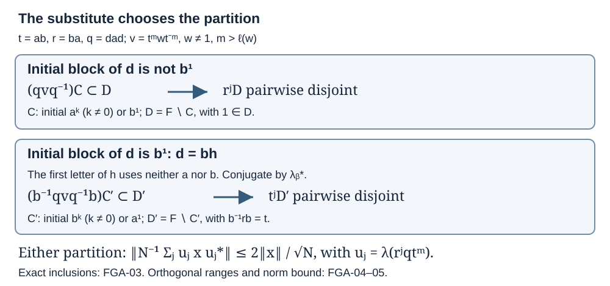

Free-group norm averages with arbitrary substitute words
A finite family of conjugations can make the nonscalar part of a free-group polynomial small in operator norm. Here the conjugating word may contain any admissible substitute from the subgroup omitting one selected generator. Two partitions of reduced words handle the two possible initial blocks of that substitute. The resulting bound is uniform in the size of the polynomial's support.
Let \(F=\mathbb F(I)\), where \(a,b\in I\) are distinct generators, and let \(H\) be the subgroup generated by \(I\setminus\{a\}\). The identity is \(1\), and \(\ell(w)\) denotes reduced word length. Put
\[ t=ab,\qquad r=ba,\qquad d\in H\setminus\{1,b\},\qquad q=dad. \tag{FGA.1} \]On \(\ell^2(F)\), left translation is the unitary \(\lambda_g\delta_h=\delta_{gh}\). A group polynomial is a finite sum \(x=\sum_w c_w\lambda_w\); its support is the set of words with nonzero coefficient. The free-group normal form, arbitrary-index Hilbert space and regular unitaries are constructed in Norm averaging in a free group algebra, Section 0. The existence and product rules of bounded adjoints, including \(\|T^*\|=\|T\|\), are proved in Bounded operator kernel, The bounded prerequisite boundary. We prove the cancellation and norm estimates needed here below.
The conclusion, proved in FGA-05, is that if \(c_1=0\) and the positive integer \(m\) exceeds the length of every supporting word, then
\[ \left\|\frac1N\sum_{j=1}^N \lambda_{r^jqt^m}x\lambda_{r^jqt^m}^{*}\right\| \leq \frac{2\|x\|}{\sqrt N}\qquad(N\geq1). \tag{FGA.2} \]The operator need not be self-adjoint, and the generator set need not be countable.
The words that survive conjugation
Lemma. If \(w\ne1\) and \(m>\ell(w)\), the reduced word \(v=t^mwt^{-m}\) is either a nonzero power of \(t\), or starts with \(a\) and ends with \(a^{-1}\). In either case, for \(h\in H\setminus\{1,b\}\), the reduced word \(hvh^{-1}\) starts and ends with nonempty strings of letters from \(I\setminus\{a\}\).
Proof. Remove as many complete initial \(t^{-1}=b^{-1}a^{-1}\) pairs from \(w\) as possible, then as many complete terminal \(t=ab\) pairs as possible. The removed strings occupy disjoint positions, so
\[ w=t^{-p}u t^s,\qquad p,s\geq0,\qquad 2(p+s)\leq\ell(w). \tag{FGA.3} \]An empty remainder gives \(w=t^{s-p}\ne1\), which commutes with \(t^m\). If \(u\ne1\), it has no initial \(b^{-1}a^{-1}\) pair and no terminal \(ab\) pair. In
\[ v=t^{m-p}u t^{-(m-s)}, \tag{FGA.4} \]both outside exponents are positive. At the left boundary, at most the last \(b\) can cancel against \(u\); removing the preceding \(a\) would require the excluded initial pair. At the right boundary, at most the first \(b^{-1}\) can cancel; removing the next \(a^{-1}\) would require the excluded terminal pair.
For a one-letter remainder \(u=b\) or \(b^{-1}\), that letter can disappear, but the new adjacent letters are respectively \(b,a^{-1}\) or \(a,b^{-1}\), so reduction stops. A longer remainder cannot disappear at both boundaries: this would require \(u=b^{-1}b\), which is not reduced. The initial \(a\) and final \(a^{-1}\) in (FGA.4) therefore survive.
Now adjoin \(h,h^{-1}\). When \(v\) starts with \(a\) and ends with \(a^{-1}\), neither boundary cancels. For \(v=t^k\), \(k>0\), only the final \(b\) can cancel at the right boundary. Cancellation requires \(h=h_0b\). Since \(h\ne b\), the word \(h_0\) is nonempty; the preceding \(a\) then meets the nonempty \(H\)-word \(h_0^{-1}\), and cancellation stops. The left boundary does not cancel. For \(k<0\), the same reasoning applies at the left boundary: removing the first \(b^{-1}\) leaves the nonempty \(h_0\) followed by \(a^{-1}\). The right boundary is protected by the final \(a^{-1}\). This proves the second assertion. \(\square\)
Two partitions with disjoint translates
A block is a maximal consecutive string of powers of one generator, with its signed exponent. Define
\[ \begin{aligned} C&=\{w:\text{the initial block is }a^k\ (k\ne0)\text{ or }b^1\}, &D&=F\setminus C,\\ C'&=\{w:\text{the initial block is }b^k\ (k\ne0)\text{ or }a^1\}, &D'&=F\setminus C'. \end{aligned} \tag{FGA.5} \]The identity belongs to both complements.
Lemma. The sets \(r^jD\), \(j\in\mathbb Z\), are pairwise disjoint. The sets \(t^jD'\) are also pairwise disjoint.
Proof. It suffices first to prove \(r^kD\subset C\) for every nonzero integer \(k\). A word in \(D\) has no initial \(a\)-letter. If \(k>0\), nothing cancels against the final \(a\) of \((ba)^k\), and the product starts with exactly one \(b\) followed by \(a\).
If \(k<0\), write \(r^k=(a^{-1}b^{-1})^{-k}\). The final \(b^{-1}\) does not cancel against an initial generator different from \(b\), and joins a negative initial \(b\)-block without cancellation. For a positive initial \(b\)-block, its exponent is at least two: exponent one is excluded by membership in \(D\). Removing one \(b\) leaves a nonempty block, so cancellation cannot reach the preceding \(a^{-1}\). The empty input also causes no cancellation. In every case the product begins with \(a^{-1}\), hence belongs to \(C\).
An intersection of two distinct translates would imply \(r^{i-j}D\cap D\ne\varnothing\), contradicting the inclusion just proved. Interchanging \(a\) and \(b\) proves the assertion for \(t,D'\). \(\square\)
The partition selected by the substitute
Proposition. Let \(v\) have either form in FGA-01. If the initial block of \(d\) is not \(b^1\), then
\[ (qvq^{-1})C\subset D. \tag{FGA.6} \]If that initial block is \(b^1\), then
\[ (b^{-1}qvq^{-1}b)C'\subset D'. \tag{FGA.7} \]Proof. For the first case write
\[ qvq^{-1}=d\,a\,(dvd^{-1})\,a^{-1}d^{-1}. \tag{FGA.8} \]By FGA-01, the middle reduced word starts and ends with nonempty \(H\)-strings. The surrounding \(a,a^{-1}\) therefore remain, as do the outside \(d,d^{-1}\).
If the initial block of \(d\) uses a generator other than \(a,b\), the final block of \(d^{-1}\) cannot cancel against a word in \(C\), whose initial generator is \(a\) or \(b\). The product retains its initial block outside \(C\). Otherwise the initial block of \(d\) is \(b^s\), with \(s\ne0,1\). Its inverse suffix is \(b^{-s}\). An \(a\)-initial input causes no cancellation. An input with initial block \(b^1\) leaves the nonzero block \(b^{1-s}\), preventing further cancellation. The first block remains \(b^s\), which is outside \(C\). This proves (FGA.6).
In the second case, write \(d=bh\). The word \(h\) is nonempty because \(d\ne b\), and its first letter uses neither \(a\) nor \(b\): the initial \(b\)-block of \(d\) has exponent exactly one, and every letter of \(d\) is in \(H\). We have
\[ b^{-1}rb=t,\qquad b^{-1}q=hth,\qquad b^{-1}qvq^{-1}b=h\,t\,(hvh^{-1})\,t^{-1}h^{-1}. \tag{FGA.9} \]The boundary proof in FGA-01 shows more here. The initial \(h\)-string of \(hvh^{-1}\) can lose at most its terminal \(b\); its final \(h^{-1}\)-string can lose at most its initial \(b^{-1}\). The first letter of \(h\), which uses neither selected generator, and its inverse at the other end therefore survive. They cannot cancel against the adjacent \(b,b^{-1}\) from \(t,t^{-1}\). The still more external \(h,h^{-1}\) cannot cancel against the adjacent \(a,a^{-1}\). The reduced word in (FGA.9) thus starts with the first letter of \(h\) and ends with its inverse. No word in \(C'\) can cancel that final letter, so its product still starts with a generator other than \(a,b\), and lies in \(D'\). This proves (FGA.7). \(\square\)

The diagram summarizes FGA-02–03. In its second row a single fixed conjugation changes both the word and the translating family. The rows describe exact alternatives for the initial block of \(d\), not probabilistic cases.
For example, \(d=bc\) with a third generator \(c\) belongs to the second case. With \(w=a,m=2\), the word \(qt^mwt^{-m}q^{-1}a\) still starts with \(bc\). It is in \(C\), so (FGA.6) would fail if applied to this substitute. Formula (FGA.7) supplies the required alternative without restricting the substitutes in the final norm estimate.
Orthogonal ranges and the operator norm
Lemma. Let \(e\) be an orthogonal projection on a Hilbert space and let \(u_1,\ldots,u_N\) be unitaries with \(eu_i^*u_je=0\) for \(i\ne j\). If \((1-e)y(1-e)=0\), then
\[ \left\|N^{-1}\sum_{j=1}^N u_jyu_j^*\right\| \leq 2\|y\|N^{-1/2}. \tag{FGA.10} \]Proof. The projections \(p_j=u_jeu_j^*\) have orthogonal ranges, since \(p_ip_j=0\) for \(i\ne j\). If \(ez=z\), the vectors \(u_jzu_j^*\xi\) lie in these respective ranges. Thus
\[ \left\|\sum_j u_jzu_j^*\xi\right\|^2 =\sum_j\|u_jzu_j^*\xi\|^2 \leq N\|z\|^2\|\xi\|^2. \tag{FGA.11} \]Taking the supremum over unit vectors gives the bound \(\sqrt N\|z\|\) for the sum. The zero complementary compression gives
\[ y=ey+(1-e)ye=z+s^*,\qquad z=ey,\quad s=ey^*(1-e). \tag{FGA.12} \]Both \(z,s\) have range in \(e\), with norm at most \(\|y\|\). Apply (FGA.11) to each, take the adjoint for the second sum, and use the triangle inequality. Dividing by \(N\) proves (FGA.10). \(\square\)
Uniform averaging for every admissible substitute
Theorem. Under (FGA.1), let \(x\) be a group polynomial with zero identity coefficient. If \(m\) is a positive integer greater than every supporting word length, then (FGA.2) holds for every positive integer \(N\).
Proof. The zero polynomial is immediate. Otherwise put
\[ y=\lambda_{qt^m}x\lambda_{qt^m}^*. \tag{FGA.13} \]Each supporting word \(w\ne1\) gives \(v=t^mwt^{-m}\) of the form in FGA-01. If the initial block of \(d\) is not \(b^1\), FGA-03 says every supporting translation of \(y\) maps \(C\) into \(D\). Hence, for the coordinate projection \(e=e_D\),
\[ (1-e)y(1-e)=0. \tag{FGA.14} \]By FGA-02 the ranges \(\ell^2(r^jD)\) are orthogonal. For \(u_j=\lambda_{r^j}\), their projections are \(u_jeu_j^*\), so \(eu_i^*u_je=0\) when \(i\ne j\). Apply FGA-04.
If the initial block of \(d\) is \(b^1\), instead put \(y'=\lambda_b^*y\lambda_b\) and \(e'=e_{D'}\). Formula (FGA.7) proves \((1-e')y'(1-e')=0\), and FGA-02 gives the orthogonal translates under \(\lambda_{t^j}\). In this case apply FGA-04 to the identity
\[ \lambda_b^*\left(\frac1N\sum_j\lambda_{r^j}y\lambda_{r^j}^*\right)\lambda_b =\frac1N\sum_j\lambda_{t^j}y'\lambda_{t^j}^*. \tag{FGA.15} \]Unitary conjugation preserves norm, so \(\|y\|=\|y'\|=\|x\|\). Both cases give (FGA.2). The compression statement applies to the entire finite sum at once; no sum of absolute coefficients replaces \(\|x\|\). \(\square\)
For \(x=\lambda_w\), \(w\ne1\), this is the bound \(2/\sqrt N\). For finitely many polynomials, choose \(m\) larger than all lengths in their combined support; the same conjugators then give (FGA.2) for each polynomial and every \(N\).
The related quantitative assertions are Exercise XIV.3(2)(d)–(e) in M. Takesaki, Theory of Operator Algebras III, Springer, 2003, pp. 113–114. The programme's Norm averaging in a free group algebra also proves the norm-closure extension, simplicity and uniqueness of trace. Those conclusions require only one admissible substitute; the theorem here retains every \(d\in H\setminus\{1,b\}\).
Exposition and proof: OpenAI GPT-6 Astra, Ultra. Original text: CC0.